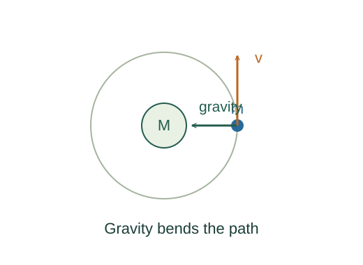

Derive circular-orbit speed and Kepler’s third law
A circular orbit is continuous free fall: gravity supplies exactly the inward acceleration required by the curved path. Combining those relations fixes both speed and period.
What the symbols mean
M: central mass; m: orbiting mass; r: centre-to-centre radius; G: gravitational constant; T: orbital period.
When this applies
Newtonian gravity, an isolated approximately spherical central body, a circular orbit outside that body, and m much smaller than M.
Developing the argument

State the gravitational force
For the spherical central body, the exterior field is the same as that of a point mass at its centre. Gravity is the inward force on the satellite.
Impose circular acceleration
Set the force equal to mass times the required inward acceleration. The satellite mass cancels.
A closer lookWhy is circular acceleration v²/r? ↗Solve for speed and period
Solve the force balance for v². Divide the circumference by speed to obtain one revolution’s duration.
Eliminate speed
Square the period and substitute v². This gives the circular-orbit form of Kepler’s third law. For bound ellipses, r is replaced by semimajor axis a.
A worked example
Using Earth’s GM ≈ 3.986 × 10¹⁴ m³/s² and r = 7.0 × 10⁶ m gives v ≈ 7.55 km/s and T ≈ 97 min.
Derivation behind this calculation ↗A point to keep straight
Orbital radius is measured from the centre, not from the surface. For comparable masses, the relative-orbit period uses G(M + m).
Check the assumptions and derivation ↗